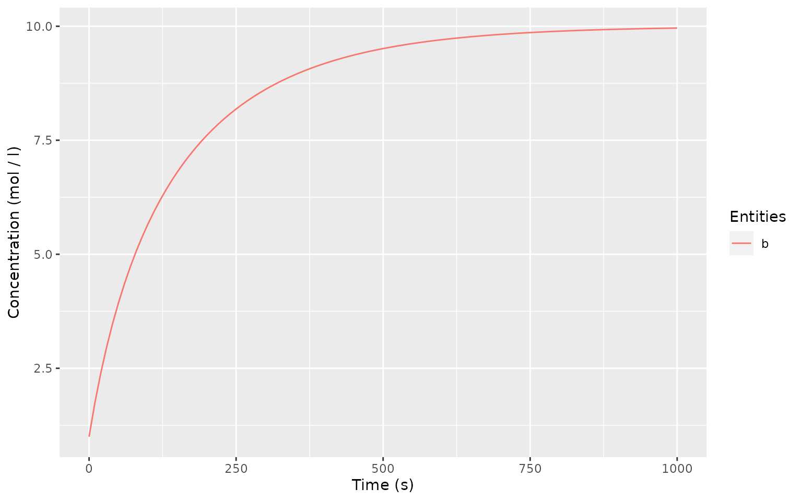

Quick Model Building
Building a quick Michaelis-Menten reaction using COPASI’s automatisms. Working with reaction equations automatically creates required entities the same way the COPASI GUI does.
newModel()
#> # A COPASI model reference:
#> Model name: "New Model"
#> Number of compartments: 0
#> Number of species: 0
#> Number of reactions: 0
newReaction("a = b", fun = "Reversible Michaelis-Menten")
#> [1] "(a = b)"
getSpecies()
#> # A tibble: 2 x 13
#> key name compartment type unit initial_concent… initial_number
#> <chr> <chr> <chr> <chr> <chr> <dbl> <dbl>
#> 1 a{co… a compartment reac… mmol… 1 6.02e20
#> 2 b{co… b compartment reac… mmol… 1 6.02e20
#> # … with 6 more variables: concentration <dbl>, number <dbl>, rate <dbl>,
#> # number_rate <dbl>, initial_expression <chr>, expression <chr>
getReactions()
#> # A tibble: 1 x 6
#> key name reaction rate_law flux number_flux
#> <chr> <chr> <chr> <chr> <dbl> <dbl>
#> 1 (a = b) a = b a = b FunctionDB.Functions[Reversible… 0 0
getParameters()
#> # A tibble: 4 x 5
#> key name reaction value mapping
#> <chr> <chr> <chr> <dbl> <chr>
#> 1 (a = b).Kms Kms a = b 0.1 <NA>
#> 2 (a = b).Kmp Kmp a = b 0.1 <NA>
#> 3 (a = b).Vf Vf a = b 0.1 <NA>
#> 4 (a = b).Vr Vr a = b 0.1 <NA>
unloadModel()More Detail
Getting more detail in can be helpful. Here we create a global quantity “substrate concentration” which applies a fixed value to species “a”. This is achieved by assigning the Value reference of the global quantity to species “a”.
newModel()
#> # A COPASI model reference:
#> Model name: "New Model"
#> Number of compartments: 0
#> Number of species: 0
#> Number of reactions: 0
subs_quant <- newGlobalQuantity("substrate concentration", initial_value = 10)
subs_value <- quantity(subs_quant, reference = "Value")
subs_value
#> [1] "{Values[substrate concentration]}"
newSpecies("a", type = "assignment", expression = subs_value)
#> Warning: No compartment exists. Created default compartment.
#> [1] "a{compartment}"
newReaction("a = b", fun = "Reversible Michaelis-Menten")
#> [1] "(a = b)"
getGlobalQuantities()
#> # A tibble: 1 x 9
#> key name type unit initial_value value rate initial_express…
#> <chr> <chr> <chr> <chr> <dbl> <dbl> <dbl> <chr>
#> 1 Valu… subs… fixed "" 10 NaN 0 ""
#> # … with 1 more variable: expression <chr>
getSpecies()
#> # A tibble: 2 x 13
#> key name compartment type unit initial_concent… initial_number
#> <chr> <chr> <chr> <chr> <chr> <dbl> <dbl>
#> 1 a{co… a compartment assi… mmol… 10 6.02e21
#> 2 b{co… b compartment reac… mmol… 1 6.02e20
#> # … with 6 more variables: concentration <dbl>, number <dbl>, rate <dbl>,
#> # number_rate <dbl>, initial_expression <chr>, expression <chr>
getReactions()
#> # A tibble: 1 x 6
#> key name reaction rate_law flux number_flux
#> <chr> <chr> <chr> <chr> <dbl> <dbl>
#> 1 (a = b) a = b a = b FunctionDB.Functions[Reversible… 0 0
getParameters()
#> # A tibble: 4 x 5
#> key name reaction value mapping
#> <chr> <chr> <chr> <dbl> <chr>
#> 1 (a = b).Kms Kms a = b 0.1 <NA>
#> 2 (a = b).Kmp Kmp a = b 0.1 <NA>
#> 3 (a = b).Vf Vf a = b 0.1 <NA>
#> 4 (a = b).Vr Vr a = b 0.1 <NA>
timecourse <- runTimeCourse(1000)
autoplot(timecourse)
Defining Reaction Kinetics Manually
In previous examples, we used the predefined “Reversible Michaelis-Menten” kinetic functions. In this example we create an equivalent function manually to achieve the same result.
newModel()
#> # A COPASI model reference:
#> Model name: "New Model"
#> Number of compartments: 0
#> Number of species: 0
#> Number of reactions: 0
newCompartment("compartment")
#> [1] "Compartments[compartment]"
newSpecies("a", type = "fixed", initial_concentration = 10)
#> [1] "a{compartment}"
newSpecies("b")
#> [1] "b{compartment}"
newKineticFunction(
"manual MM",
"((Vf * substrate) / Kms - Vr * product / Kmp) / (1 + substrate / Kms + product / Kms)",
parameters = list(substrate = "substrate", product = "product")
)
#> [1] "FunctionDB.Functions[manual MM]"
newReaction(
"a = b",
fun = "manual MM",
mapping = list(
substrate = "a",
product = "b",
Vf = 0.1,
Kms = 0.1,
Vr = 0.1,
Kmp = 0.1
)
)
#> [1] "(a = b)"
timecourse <- runTimeCourse(1000)
autoplot(timecourse)
Quantities as Proxy for Time Course Output
The runTimeCourse function only returns data for actual defined entities of the model. Auxiliarry information like reaction rates can be missing and needs to be added via global quantity assignments. This example creates a global quantity “reaction rate” to generate data for the main reaction’s flux.
newModel()
#> # A COPASI model reference:
#> Model name: "New Model"
#> Number of compartments: 0
#> Number of species: 0
#> Number of reactions: 0
subs_quant <- newGlobalQuantity("substrate concentration", initial_value = 10)
subs_value <- quantity(subs_quant, reference = "Value")
newSpecies("a", type = "assignment", expression = subs_value)
#> Warning: No compartment exists. Created default compartment.
#> [1] "a{compartment}"
newReaction("a = b", fun = "Reversible Michaelis-Menten")
#> [1] "(a = b)"
runTC(1000)$result
#> # A tibble: 101 x 3
#> Time b a
#> <dbl> <dbl> <dbl>
#> 1 0 1 10
#> 2 10 1.75 10
#> 3 20 2.40 10
#> 4 30 2.97 10
#> 5 40 3.48 10
#> 6 50 3.94 10
#> 7 60 4.35 10
#> 8 70 4.72 10
#> 9 80 5.06 10
#> 10 90 5.37 10
#> # … with 91 more rows
newGlobalQuantity(
"reaction rate",
type = "assignment",
expression = reaction("a = b", reference = "Flux")
)
#> [1] "Values[reaction rate]"
runTimeCourse(1000)$result
#> # A tibble: 101 x 4
#> Time b a `Values[reaction rate]`
#> <dbl> <dbl> <dbl> <dbl>
#> 1 0 1 10 0.0811
#> 2 10 1.75 10 0.0696
#> 3 20 2.40 10 0.0608
#> 4 30 2.97 10 0.0538
#> 5 40 3.48 10 0.0480
#> 6 50 3.94 10 0.0432
#> 7 60 4.35 10 0.0391
#> 8 70 4.72 10 0.0356
#> 9 80 5.06 10 0.0326
#> 10 90 5.37 10 0.0299
#> # … with 91 more rows
unloadModel()